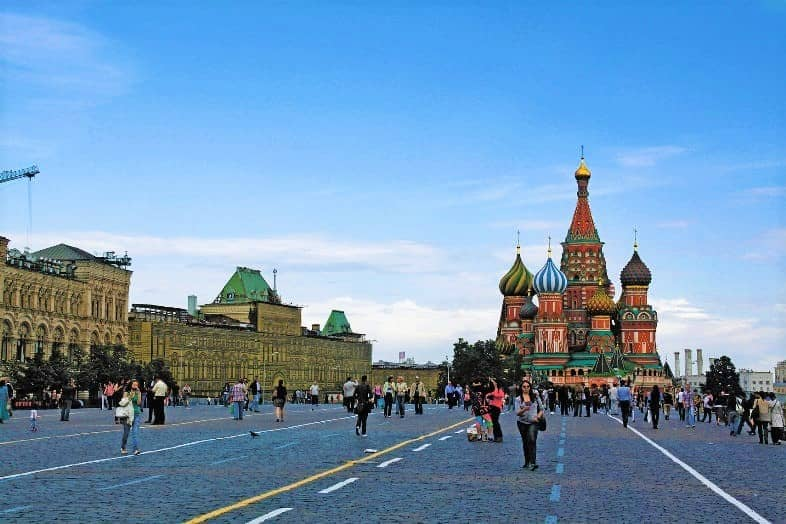

موسكو العاصمة ومن اهم وجهات السياحة في روسيا ، تحتضن مجموعة كبيرة من المعالم السياحية من ضمنها متاحف وقصور ومنتزهات من اشهر المزارات السياحية فيها الميدان الاحمر والكرملين وغيرهما.
أفضل وقت لزيارة البلد
نهاية نوفمبر الى نص ديسمبر.
أبرز الأماكن السياحية
Red square : لميدان الأحمر :هو أحد أشهر الميادين شعبية في روسيا ، يأخذ الميدان شكل المُربع ويقع بين سوق تجاري تاريخي شهير في موسكو يُطلق عليه (كيتاي جورود)، وبين قصر الكرملن الميدان من اهم اماكن السياحة في موسكو وموقعه في قلب المدينة يسهل الوصول إليه من جميع الاتجاهات والطُرق السريعة المؤدية من العاصمة وإليها

قصر كوسكوفر: عند الحديث عن أي مناطق سياحية في موسكو، يبرُز قصر كوسكوفو كأحد رموز المدينة التي تجتذب عدد كبير من الضيوف، فبداخل هذا القصر يستمتع الجميع بمُشاهدة الفن المعماري الفريد للمكان وبالتنقّل بين أروقته والتجوّل بين الغرف الملكية التي توجد بداخله، ويبدأ حينها الزوّار في استكشاف نمط الحياه قديماً لاسيّما عند رؤية الثُريّات الثمينة التي تُزيّن الأسقف والزخارف والنقوش المميزة.
قصر كرلمين: يُعد واحدًا من أشهر معالم موسكو روسيا ، وهو عبارة عن مُجمع قصور تاريخية فاخرة كانت مقرًا لحاكم روسيًا قديمًا وتم تحويلها في عصرنا الحالي إلى عدد من المتاحف، كلمة كرملين باللغة الروسية تعني القلعة أو القصر المنيع
كيفية الوصول إليها
يمكن الوصول إلى البلد بواسطة الطائرة، السفينة، القطار، أو السيارة اعتمادًا على موقعك الحالي.